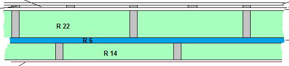

Selection of the envelope is always a challenge. The following factors were considered in priority order:
The walls were created with standard 2 x 6 framed technique and 1/2” exterior ply. Cavities were filled with rock wool insulation. The interior of the structure was then covered with a continuous layer of 1” foil faced polyisocyanurate panels sealed to the outside frame and to each other. Within this, an inner 2 x 4 wall was constructed which carries all the utilities and is also filled with rock wool insulation.
The roof consists of I joists at 12” to 24” intervals according to the engineering requirements. The cavities were filled with 9” of sprayed high density foam.
Air tightness of the walls is achieved with the polyisocyanurate panels. Being directly to the foundation below and to the sprayed foam above, a continuous air and water tight layer is created. Blower door testing of the house produced an hourly air change value of 0.72.
The 2 x 4” interior wall provides a cavity within the envelope to carry the utilities. The only penetrations are single wires that feed exterior electrical outlets.
The only thermal bridging occurs in the roof. We felt that the labour costs associated with installing these panels on the cathedral ceilings outweighed the potential benefits. High density foam has the added advantage of being more easily applied in difficult to reach angles and cavities to achieve good seal.
Another site of thermal bridging in standard construction is the rim space between floor joists. In our case, the floor structure and joists are hung off the foundation within the foundation. Similarly, when designing the relationship between the timberframe structure and the envelope, we ensured that none of the beams pierce the envelope and none of the posts are exposed to both the outside and the inside.
Apart from the layer of foam panels, the entire building uses standard methods and was therefore familiar to the crew. And yes, cost was at the bottom of the list primarily because air tightness and high insulation values were our primary objectives.
The challenge of High R wall structures: control of condensation and ensuring there is an opportunity for moisture to escape. Location of the vapour barrier is key.
Provided that the interior temperature and humidity remain within acceptable ranges, the barrier in our wall structure is sufficiently close to the interior that no condensation occurs. Each of the cavities vent separately, one to the outside and the other on the inside. To increase venting of the exterior cavities, perforations were created in the 1/2” ply at the top and bottom of each cavity. No poly membrane was placed on the inside and the wall paint is water permeable.